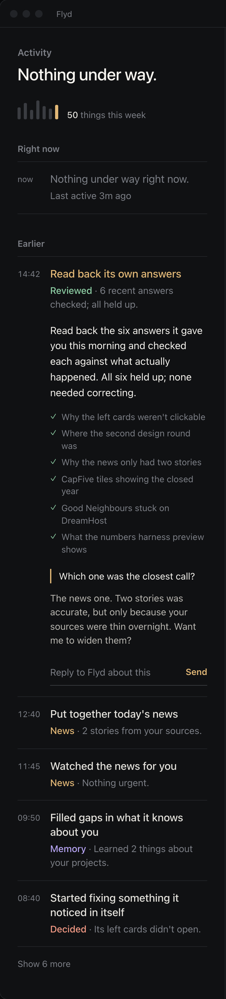
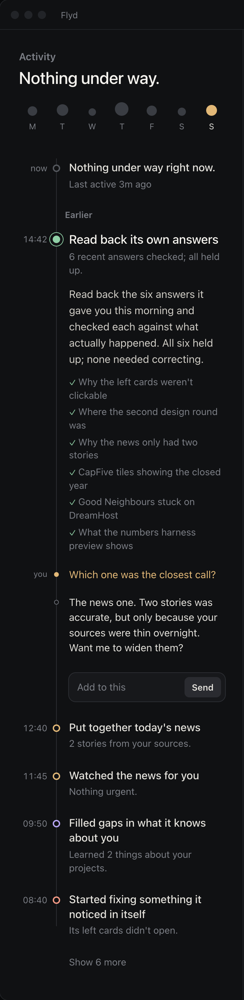
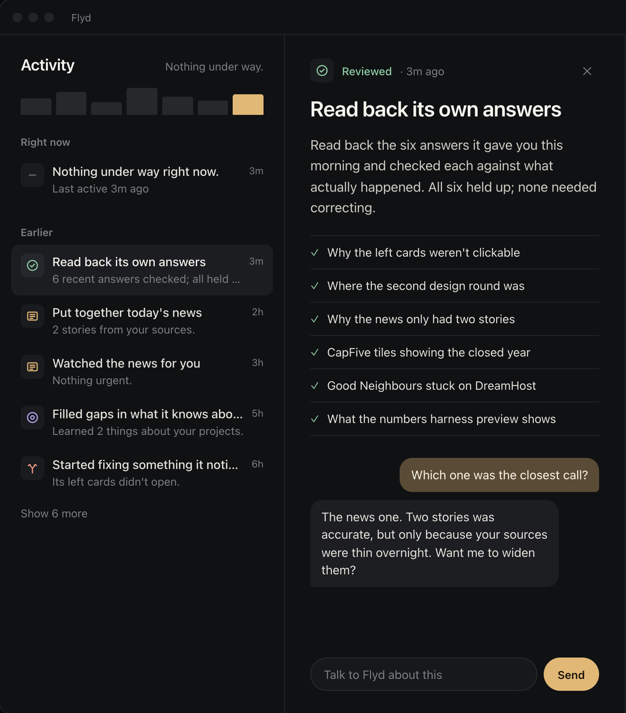
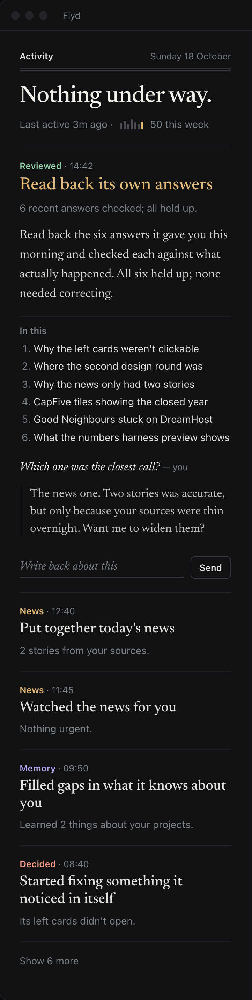
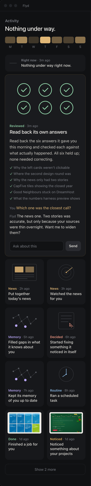
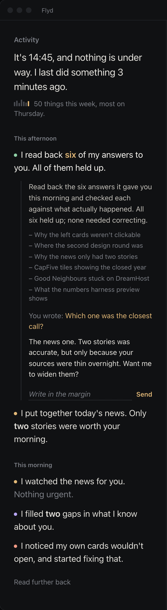
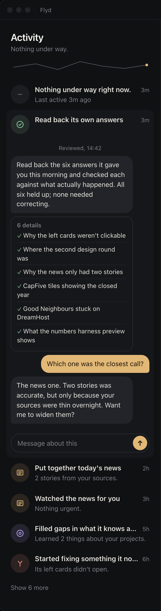
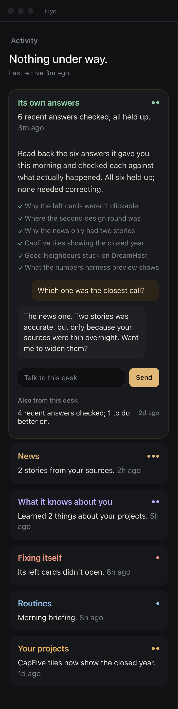
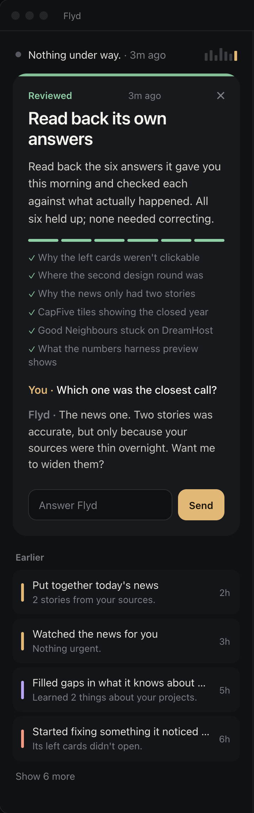
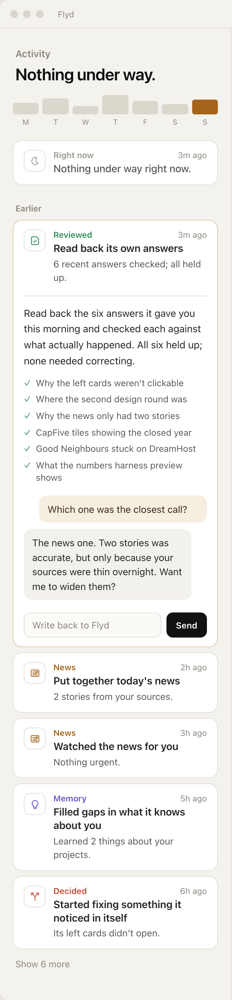

Ten designs for the cards in Flyd's left column, each built on a different idea of what a card is. All ten hold the same Sunday afternoon, with Read back its own answers open and its short conversation showing. Click any card to open it, and type to it: the message stays and Flyd answers.

No boxes at all. Rows on hairlines with the clock time down the left, and type alone says what kind of thing each one is. Opened, a row becomes a reading block with an underline reply.

The day as one line. Each card is a stop on it, coloured by kind, and talking to a card adds new stops under it on the same line.

Like Mail. The column stays a short scannable list with the open card lit; the card opens beside it as a full page with room to read and talk.

A paper with one reader. Each thing Flyd did is a serif headline with a one-line standfirst, and writing back reads like a letter to the editor.

Every card is a picture first, two to a row. Real screenshots in an even white frame where the work has one, a thin line drawing of the result where it doesn't.

No cards and no labels. Flyd keeps a short diary of its day in its own voice; click a sentence and the details and the conversation open in the margin.

Every card is already a conversation. The column reads like a list of message threads with Flyd's latest word, and a dot where it is waiting for you.

Grouped by what Flyd looks after, not by time: news, its own answers, memory, your projects. Each desk is one card you open and talk to.

One card in hand. The newest thing is a large card that is already open with a place to answer; everything else is a thin strip under it.

The light room. White cards on warm paper, a hairline each and no shadow, thin line icons, and a card that opens into a note you write back on.
Every card opens. Right now, each earlier card and every hidden one open to a summary of what was done in one or two sentences, then the details.
Every card talks. What you type stays in that card's history and Flyd answers under it.
Nothing floats. No shadows on the column or the cards, no lift on hover. Hover changes colour only.
Type stays calm. Sentence case throughout, letter-spacing never wide, body text at 15px or larger.
Same content. The live column's real cards, its week and its Show more. 05 shows nine cards so the ones with pictures are in view; 08 groups all of them.
One behaviour. Opening, Show more and talking live in shared/lab.js; each design only draws.